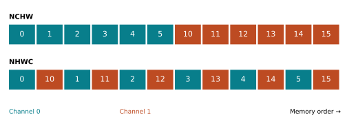
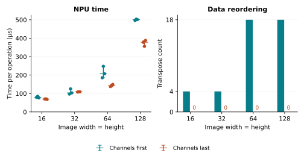
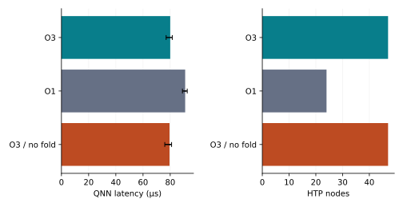
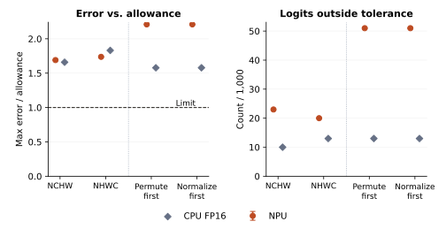

The Same Convolution,
a Different Layout
Following a tensor from memory order to Snapdragon NPU execution
1From comparing chips to comparing layouts
I started by comparing my RTX 3060 laptop GPU with a Snapdragon NPU through Qualcomm AI Hub. I wanted to see where the NPU was useful, beyond a headline benchmark.
The timing boundaries made a simple ranking hard to defend. The GPU measurements used resident FP16 tensors and CUDA graph replay; the NPU measurements used QNN calls with FP32 inputs and outputs, requesting FP16 computation. Those numbers include different work. I also had no NPU energy measurements.
A narrower question seemed more useful: on the same type of NPU, what changes when the same convolution receives its data in a different order? That gives a compiler question with something concrete to inspect: the generated operations.
2What a layout changes
N, C, H and W stand for batch, channels, height and width. For one image with two channels, contiguous NCHW stores each channel together. Contiguous NHWC puts the channels of each pixel next to one another. The values and their pixel positions stay the same.

A 1×1 convolution with weights [2, 1] is enough to check the distinction:
y[h, w] = 2 × x0[h, w] + x1[h, w]
The first pixel gives 2 × 0 + 10 = 10 in either layout. An explicit-loop
implementation gives the output [[10, 13, 16], [19, 22, 25]]; both PyTorch layout paths
match it exactly. A plain reshape gives the wrong result, because it assigns
the existing values to different axes.
The distinction matters for cost too. In this example, permute creates a
view sharing the original storage; packing that view with contiguous()
copies values. A compiler may fuse or eliminate that conversion. Counting permutations
in the source therefore does not tell us how many copies execute.
One PyTorch detail: channels_last keeps the logical NCHW shape and changes
strides. An NHWC interface changes the axis order as well. They are related, but they
are not interchangeable API choices.
3The convolution on the NPU
The device experiment holds the logical input and weights fixed and changes the external layout. Each run checks numerical agreement and NPU placement.
| Device | Galaxy S24 · Snapdragon 8 Gen 3 · Hexagon v75 |
|---|---|
| Runtime | QNN DLC · QAIRT 2.50 · Android 14 |
| Precision | FP16 requested; FP32 input and output |
| Operation | Batch 1 · 32 input / 64 output channels · 3×3 + ReLU |
| Sampling | Three separate AI Hub jobs per layout and size |
QNN is the Qualcomm runtime whose call is timed. The HTP profile records generated operations on the Hexagon NPU. These are different views of the same experiment: one measures latency, the other helps explain what ran.

At 64×64, latency falls from 207 to 142 µs, a 31.4% reduction. The corresponding trace goes from 18 transpose instances to zero. At 128×128, latency falls by 24.6%. But at 32×32 the NHWC median is slightly higher and the job ranges overlap. Removing transposes did not guarantee a win.
The trace supports a change in layout handling; it does not assign the entire
65 µs difference to transposes. Other operations change too. At 64×64,
ForceFormat_Crouton instances increase from four to eight, so format work
remains. The instrumented HTP trace also has a different timing method from the QNN
measurement; subtracting its operation times would not isolate the saving.
Input and output reordering are outside this measurement. The benefit therefore assumes the surrounding pipeline can supply and consume the chosen layout. These were separate cloud sweeps, with uncontrolled device assignment and clocks. They support a result for this configuration, not a phone-wide speedup.
4Checking where a compiler option takes effect
The first sweep exposed a problem in the experiment itself. It supplied HTP options during DLC conversion, without verifying that they took effect during preparation on the device. That prevented a claim about O1 versus O3. The layout comparison above uses matched requested settings, but does not establish which preparation options were applied.
I corrected the runner to pass those options explicitly on inference jobs, then checked the runtime logs and generated graph. The following experiment fixes the convolution at 16×16 and changes only the preparation request.

O1 produces 24 nodes instead of 47, yet takes 91 rather than 80 µs. A node count gives equal weight to operations that can have very different costs. It cannot substitute for a timing measurement. The folding-disabled request has a range overlapping O3 and does not establish a folding benefit.
This reminded me of the independent solver check in my weather study: before interpreting a setting, verify what the implementation actually did.
5Does it survive a complete model?
A single convolution leaves the more interesting question open. I followed it with pretrained MobileNetV2, using torchvision's IMAGENET1K_V2 weights and one 224×224 image. These jobs request FP16 and explicitly set O3 at device preparation. The experiment plan and acceptance rule were committed before the model jobs.
There are two comparisons. The first supplies already-normalized tensors in NCHW or NHWC. The second supplies identical cropped RGB pixels and places normalization inside the graph: one variant permutes then normalizes, the other normalizes then permutes. Compare within each pair; they include different work. Image decoding, resize/crop, host casting and transfers remain outside timing.
Before comparing speed, every output score, or logit, must agree with the CPU FP64 reference under the fixed rule:
|output − reference| ≤ 0.01 + 0.01 × |reference|

All 12 jobs failed the rule. They reported NPU execution and preserved the reference's top prediction, but 20–51 logits per output exceeded the allowance. The three repeats of each case returned identical error statistics, so the plotted NPU ranges collapse to points.
After that rejection, I added a CPU FP16 calculation to investigate the precision question. It fails the same tolerance too. That shows this rule can reject ordinary reduced-precision execution of the network; it does not identify a Qualcomm-specific defect. CPU FP16 is also not an emulator of NPU arithmetic.
Keeping the top prediction is encouraging, but it does not satisfy a check on all 1,000 scores or establish classification accuracy. I kept the original rule and left these timings out of the performance claim. The whole-model speedup question remains open under this numerical requirement.
6What I would test next
The clearest result is the connection between interface layout, generated format operations and measured convolution latency. The 32×32 case is worth following: it loses its transposes without showing a clear speedup. Kernel choices and remaining format work are candidates to inspect, rather than assuming transpose count explains everything.
For MobileNetV2, I would first choose a classification-accuracy requirement on a representative dataset and inspect how FP16 error accumulates through the layers. That requirement needs to be set before the next run. Then I would alternate the layout variants on one controlled device and include preprocessing and transfers. Those experiments could establish whether the local convolution result matters to an application.
7Reproduce and inspect
The companion notebook runs the small correctness example and rebuilds the figures from saved measurements. From the repository root:
pip install -e '.[notebook]'
python scripts/build_layout_notebook.py --with-visionThis uses the CPU and recorded device results; it submits no cloud jobs. The study README records the environment and commands for fresh measurements.